Charades · Animals · page 13/13 · all packs
Reject an image by adding its slug to public/charades/charades-animals/reject.txt (append ! to keep it word-only), then re-run node scripts/genimages.mjs.
1 2 3 4 5 6 7 8 9 10 11 12 13 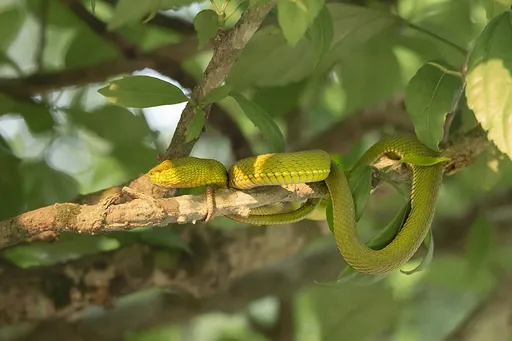
Viper viperCC BY-SA 4.0 · Tisha Mukherjee · source Vulture vultureCC BY-SA 4.0 · PhilipRomano · source 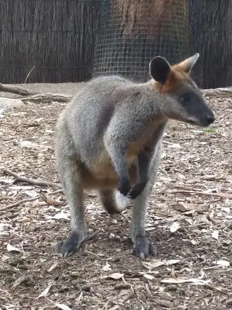
Wallaby wallabyCC0 · Cat Lee Ball · source 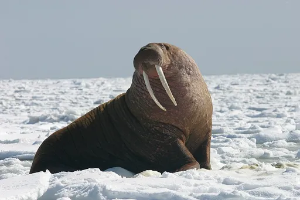
Walrus walrusPublic domain · Joel Garlich-Miller, U.S. Fish and Wildlife Service · source 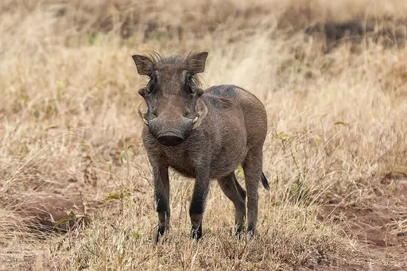
Warthog warthogCC BY-SA 4.0 · Giles Laurent · source 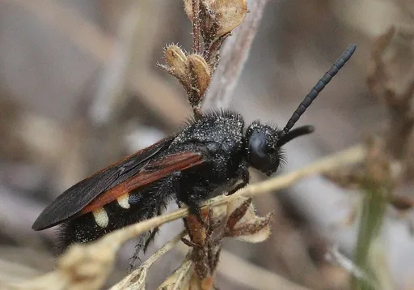
Wasp waspCC BY 4.0 · Jan Ebr · source 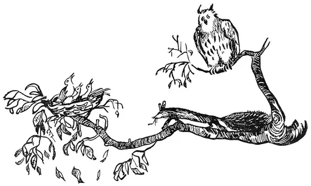
Weasel weaselPublic domain · Unknown authorUnknown author · source 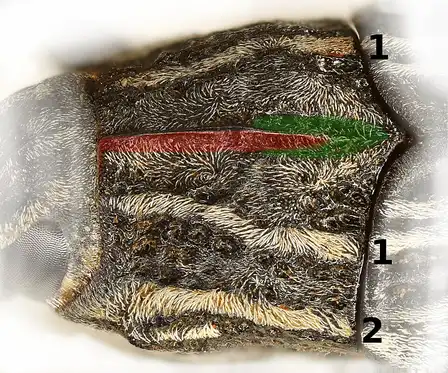
Weevil weevilCC BY-SA 4.0 · Siga · source 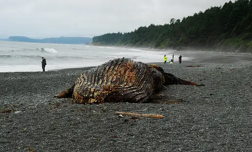
Whale whaleCC BY 4.0 · Entychologist · source 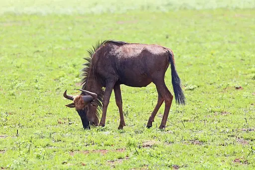
Wildebeest wildebeestCC BY-SA 4.0 · Bernard Gagnon · source Wolf wolfCC BY 4.0 · Valkyria1979 · source 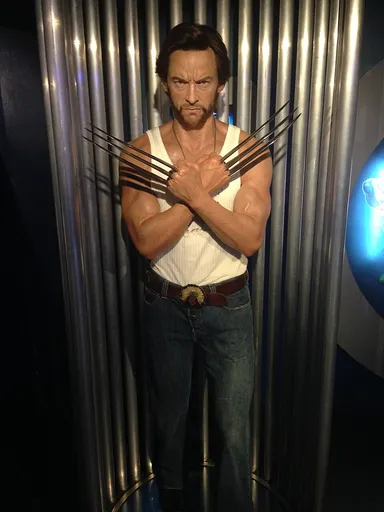
Wolverine wolverineCC BY 2.0 · Luke Rauscher · source 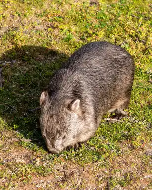
Wombat wombatCC BY-SA 4.0 · Dietmar Rabich · source 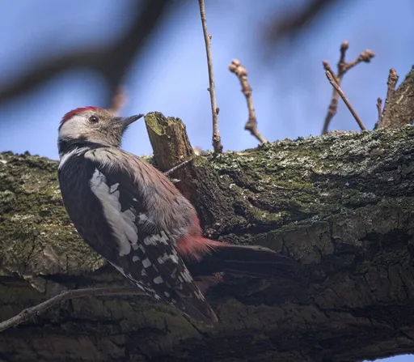
Woodpecker woodpeckerCC BY-SA 2.0 · hedera.baltica from Wrocław, Poland · source 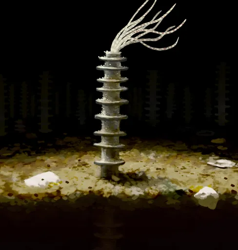
Worm wormCC BY-SA 4.0 · Paleo Miguel · source 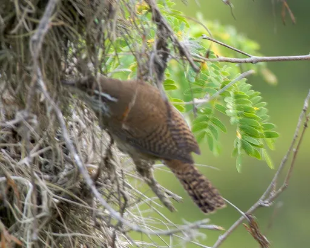
Wren wrenCC BY-SA 4.0 · Anthony Kaduck · source Yak yakCC0 · Bernard Spragg · source 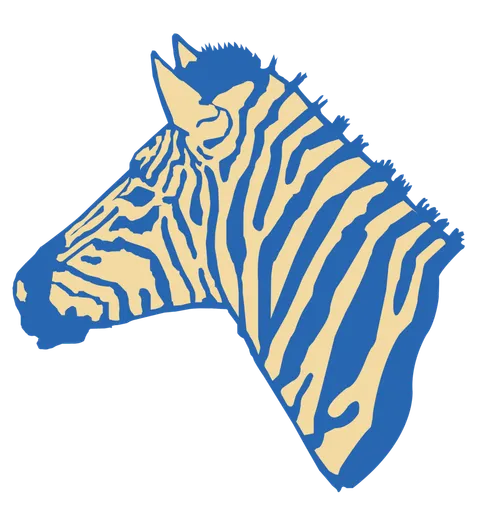
Zebra zebraCC0 · Francis Akuka for the Wikimedia Foundation. · source 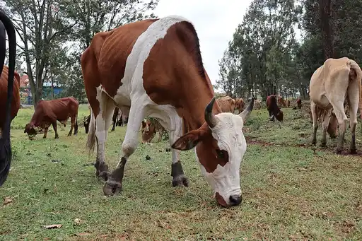
Zebu zebuCC0 · safaritravelplus · source 1 2 3 4 5 6 7 8 9 10 11 12 13